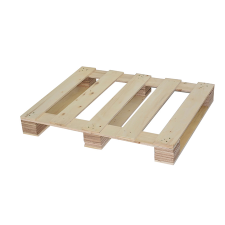
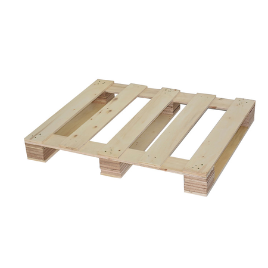

О компании
Компания "КасКад-Тара" имеет опыт по производству и продаже облегченной тары из дерева. За время существования компании, мы смогли добиться высокого качества и стабильных производственных мощностей. Ежемесячно, наша компания производит порядка 7000 облегченных, качественных поддонов!
Все наши поддоны проходят обязательны контроль, для выявления некондиционных изделий на стадии производства и устранение дефектов. Это позволяет усовершенствовать технологический процесс не изменяя темп и объемы производства. Высокотехнологичное оборудование для производства поддонов позволяет выполнять заказы точно, в срок, качественно, согласно Госту и требованиям заказчика. Если Вы заинтересованы в приобретении легкой деревянной тары, наши специалисты подберут для Вас несколько вариантов конструкции паллетов, которые смогут удовлетворить Ваши пожелания. Всегда готовы для общения и сотрудничества.
Облегченные поддоны
Поддон однонастильный облегченный тип П4, 800х1200мм, 1000x1200 ГОСТ 9078-84
-
Технические характеристики тары облегченного типа
Требования к внешнему виду и характеристики облегченного поддона определены в ГОСТ. До 2017 года это был стандарт № 9078–84, с мая этого года – ГОСТ 33757–2016. Основным материалом для производства является древесина хвойных и лиственных пород II и III сорта. Мы используем при изготовлении: только березовую заготовку, что позволяет сохранить прочность при малых размерах и весах изделий.
Сырье проходит соответствующую обработку и тщательно отбирается при каждом этапе производства и хранится в соответствующих условиях. Для изготовления берется древесина естественной или транспортной влажности. Все это определяет гарантированную способность наших поддонов выдерживать регламентный вес грузов (до 800 кг) и обеспечивает долговечность их службы (в том числе, при многоразовом использовании).
- Настил: 4-7шт. ширина 60-80мм
- Поперечные доски: 3 шт. шириной 60-80мм
- Нижние доски: 3 шт шириной 60-80мм
- Расстояние между досками настила: не более 120 мм
- Фаски: Угловые фаски - не обязательны. Заходные фаски - не обязательны
- Гвозди: допускается наличие строительных гвоздей
Помимо количества и размерности отдельных конструктивных элементов, паллеты разных типоразмеров отличает регламентированное расстояние между досками настила. В облегченных изделиях 1200 на 800 мм или 1200 на 1000 оно может быть любым. В больших паллетах это расстояние – до 14 см.
В зависимости от ваших целей и типа товара мы изготовим паллеты с толщиной поперечин от 14 до 16 мм. Стандартная конструкция не предусматривает обязательного наличия фасок на углах, но опционально их можно добавить для продления срока службы легких поддонов.
Легкие поддоны предназначены для груза весом до 500 кг. Паллеты имеют стандартные размеры. Поддоны выполнены из качественной древесины хвойных пород. Перед продажей каждый поддон проходит тщательный контроль качества. Определяется наличие трещин, несмываемых загрязнений. Не допускается наличие торчащих гвоздей, повышенной влажности. Допускается наличие естественных трещин в результате термообработки.
-
Особенности облегченных изделий
Ключевая особенность облегченных изделий для перевозки и хранения товара – сниженный вес.
Что он дает:
- скорость погрузочно-разгрузочных работ;
- экономия общего тоннажа при загрузке автотранспорта;
- перемещение и складирование без усилий при ручной упаковке и комплектации груза;
- возможность использования тары с продуктами, которые требуют специальных условий доставки и хранения (вентиляция);
-
Применение легких поддонов
Сфера применения практически не ограничена. Единственное условие, которое определяет их пригодность для конкретных условий погрузки, – вес партии товара. Такую тару разрешено использовать с грузами, масса которых не превышает 500–800 кг (зависит от размера изделия).
Чаще всего легкая конструкция используется:
- для однократной погрузки и отправки (складирования в местах перевалки);
- при упаковке невозвратных поддонов;
- для транспортировки легковесного груза (канцелярия, косметика, продукция легкой промышленности);
Предельную нагрузку определяет типоразмер.
Наиболее распространены два типа изделий – паллета 1200х800 и поддон облегченный 1200х1000 мм.
-
Требования к материалам
Если вы хотите купить деревянные облегченные поддоны высокого качества, обязательно разберитесь с требованиями к данным конструкциям. Так, изделия считаются пригодными для эксплуатации при соблюдении следующих условий:
- цвет – светлый, допускается потемнение до серого (но при этом рисунок древесины должен быть хорошо различим);
- на поверхности изделия не должно быть крупных пятен (согласно ГОСТ, допустимы мелкие загрязнения, но они не должны пачкаться или источать сильный запах);
- доски – очищенные (обзол с корой может присутствовать только на сторонах досок заполнения или изнутри настила).
По заявке заказчика наша компания изготовит окрашенный облегченный поддон (в том числе, с логотипом). Это допускается ГОСТ и европейскими стандартами.
-
Преимущества облегченных паллет
Основные плюсы легкой конструкции:
- малый вес (возможность перевозить товар малотоннажным транспортом, ускоренная погрузка);
- доступная стоимость (это самый дешевый вид тары);
- минимальный расход деревянного материала на производство изделий (ускоренное изготовление крупных партий).
Категории поддонов
-
Типовой 1200 * 800 по ГОСТ 9078-84 до 1500 кг.
Настил: не менее 5 досок, шириной около 100 мм, толщиной 20 - 22 мм
Поперечные доски: 3 шт. шириной 100 мм, толщиной 20 - 22 мм
Шашки: 9 шт. размером 100 х 100 мм, высотой 80 мм
Нижние доски (лыжи): 3 шт. шириной 100 мм, толщиной 20 - 22 мм
Расстояние между досками настила: не более 75 мм
Гвозди: винтовые или ершенные.
Поддон изготавливается из обрезных пиломатериалов хвойных и лиственных пород (в зависимости от желания заказчика), используются винтовые, строительные или ершенные гвозди, гвозди забиты со стороны продольных досок, концы подогнуты и полностью утоплены в древесину. Поддон изготавливается из древесины естественной влажности
-
 типовой 1200 * 1000 по ГОСТ 9078-84 до 1500 кг.
типовой 1200 * 1000 по ГОСТ 9078-84 до 1500 кг.Настил: не менее 7 досок, шириной около 100 мм, толщиной 20 - 22 мм
Поперечные доски: 3 шт. шириной 100 мм, толщиной 20 - 22 мм
Шашки: 9 шт. размером 100 х 100 мм, высотой 80 мм
Нижние доски (лыжи): 3 шт. шириной 100 мм, толщиной 20 - 22 мм
Расстояние между досками настила: не более 50 мм
Гвозди: винтовые или ершенные.
Поддон изготавливается из обрезных пиломатериалов хвойных и лиственных пород (в зависимости от желания заказчика), используются винтовые, строительные или ершенные гвозди, гвозди забиты со стороны продольных досок, концы подогнуты и полностью утоплены в древесину. Поддон изготавливается из древесины естественной влажности
-
Типовой 1200 * 800 по ГОСТ 9557-87 до 2500 кг.
Настил: не менее 3 доски, шириной 145 мм, 2 доски шириной 100 мм., толщиной 20 - 22 мм.
Поперечные доски: 3 шт. шириной 145 мм, толщиной 20 - 22 мм
Шашки: 6 шт. размером 145 х 100 мм, 3 шт. размером 145 х 145 мм, высотой 80 мм
Нижние доски (лыжи): 2 шт. шириной 100 мм, 1 шт. шириной 145 мм, толщиной 20 - 22 мм
Расстояние между досками настила: не более 65 мм
Гвозди: винтовые или ершенные.
Поддон изготавливается из обрезных пиломатериалов хвойных и лиственных пород (в зависимости от желания заказчика), используются винтовые, строительные или ершенные гвозди, гвозди забиты со стороны продольных досок, концы подогнуты и полностью утоплены в древесину. Поддон изготавливается из древесины естественной влажности
-
нестандартный по желанию заказчика
 

Деревянные настилы
Деревянный настил - это элемент, служащий для обустройства рабочей зоны непосредственно на строительных лесах. Конструкция настила изготавливается из доски толщиной 25 - 40 мм, в зависимости от того для каких работ будут использоваться деревянные помосты. Например, для кирпичной кладки настилы нужны толщиной не менее 40 мм. Щит сбивается специальным образом для того, чтобы предотвратить опрокидывающий момент.
Следует обратить особое внимание на то, что для каждого вида строительных лесов производятся разные по габаритным размерам настилы. Например, деревянный щит с размерами 1,05 * 0,95 м в основном устанавливают на рамные леса. Настил на клиновидные леса имеет габаритные размеры 1200 * 450 мм. Внутренние перемычки этого настила расположены в виде так называемого "ласточкиного хвоста". Такой способ изготовления помоста позволяет ему достаточно прочно и надежно находится на металлическом каркасе строительных лесов.
Настил деревянный 460 * 1200 Выполнен из пиломатериалов 1-2 сорта хвойных или лиственных пород Толщина доски 25мм. или 40 мм.
Настил деревянный 1,05 * 0,95 Выполнен из пиломатериалов 1-2 сорта хвойных или лиственных пород Толщина доски 25мм. или 40 мм.
Деревянные настилы
Настил деревянный для строительных лесов щиты, размеры стандартные 1,05х0,95 и 1200x460 Деревянный настил - это элемент, служащий для обустройства рабочей зоны непосредственно на строительных лесах. Конструкция настила изготавливается из обрезной доски толщиной 25 - 40 мм. в зависимости от того для каких работ будут использоваться деревянные помосты. Например, для кирпичной кладки настилы нужны толщиной не менее 40 мм. Как видно на фотографии щит сбивается специальным образом, для того чтобы предотвратить опрокидывающий момент. Доски настила изготавливаются по ГОСТ 8486-86*,
Строительные настилы деревянные - производимые нашей компанией (для строительных лесов) соответствует госту, имеет противопожарную обработку антисептиками. Древесина (доска обрезная 1 сорта,2 и 3 сорта), из которой мы производим деревянные настилы для многих видов строительных лесов. Толщина доски стандартная 25см., возможно изготовления из 30, 40, 50.
Деревянные поддоны поставляются в пачках, сформированные по 25 шт. (облегченные по 30 шт.)
Габаритные размеры пачек стандартных размеров, 1200*900*2400 или 1200 * 1100 * 2400.
При желании заказчика возможно перетяжка пачек полипропиленовой лентой для более прочной устойчивости пачек поддонов. Погрузка производится путем задней загрузки и компоновкой пачек по длине и ширине внутри кузова автомобиля. Для более оперативной разгрузки возможно использование открытого транспорта.

ГАЗЕЛЬ 1,5 Т. Возможные варианты загрузки: стандартные поддоны до 150 шт. 1200 * 800 или до 100 шт. 1200 * 1000
10 т. Возможные варианты загрузки: до 300 шт. поддоны 1200 * 800 или до 200 шт. 1200*1000
20 т. Еврофура полуприцеп 96 куб.м. (самый распространенный) Возможные варианты загрузки: до 700 шт. поддоны 1200 * 800 или до 550 шт. 1200 * 1000
20 т. Еврофура 120 куб.м. До 1000 поддонов.